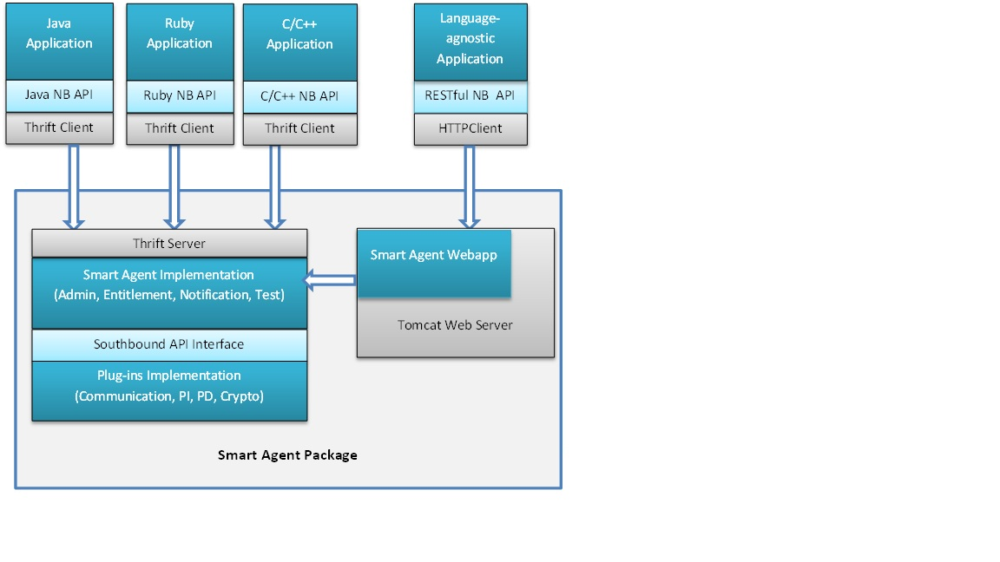

The design considerations on this page is based on the requirements listed in DLO Non-Embedded Smart Agent Plan document.
NESAL needs to be portable among popular Operation Systems including, but not limited to, Linux and Windows. To meet this requirement, NESAL will be implemented in JVM languages and executed on JVM at runtime environment.
NESAL has a pluggable architecture whereas it defines a set of Northbound API which provides licensing services and can be invoked by software product and client programs; and a set of Southbound API Interface for software products to provide their plug-ins implementation.
NESAL needs to support multiple language bindings for the Northbound API, including API for Java, Ruby, C and C# languages.
The approach that we will consider to fulfill this requirement is using Apache Thrift as middleware layer. Apache Thrift is a RPC (remote procedure call) framework developed by Facebook. It also provides multiple language bindings for both client side and server side. Cisco onePK also adopted Thrift for its middleware layer.
With Apache Thrift it is possible we maintain a single code base at server side while providing multiple language bindings at client side with minimal effort.
The following component diagram illustrate the design using Apache Thrift:
In addition to traditional language bindings, RESTful API will be provided for Northbound API to allow language-agnostic programming. The following considerations should be kept in mind:
- Design the API to conform to RESTful conventions.
- Define the object model in terms of resource. A resource is a collection of information that can be identified by a URI (it's the R in URI), for example, entitlement.
- Allow the Smart Agent to be packaged as WAR file and run as web application on web server.
In oder to keep in sync with the logic in the Embedded Smart Agent, NESAL needs to implement State Machine to determine the state of entitlements.
It is possible to reuse open-source implementation of State Machine Framework. The followings are some options to consider:
- Apache Commons SCXML - http://commons.apache.org/proper/commons-scxml/
- UniMod - http://unimod.sourceforge.net/fsm-framework.html
- Fettle - http://thehiflyer.github.io/Fettle/
Since NESAL will not share the same code base with the Embedded Agent, special care will be taken to ensure the API consistency between the two.
At this moment, the process will involve reviewing the API documents for these two side by side. In the future, automatic script should be developed for reporting the discrepancy.
Since NESAL will provide multiple language bindings for the API, special care also need to be taken to ensure the API consistency among languages.
Again, automatic script should be considered for reporting the discrepancy in the future.
Ruby provides a rich set of facilities for metaprogramming and reflection. Its reliance on closures and blocks make for a programming style that is both compact and powerful. Ruby shines as an agile programming language for building coding blocks, while Java is suitable for system integration. So we will use Java for the framework and JRuby for internal implementation in the development phase.
There are two mechanisms for integrating Java and Ruby code:
The first approach is using jrubyc command to generate Java source code from Ruby scripts that have classes in them. For example, a simple Ruby class:
class Foo
def bar(a, b)
puts a + b
end
end
To expose this Ruby class as a Java class, we can run "jrubyc --java" to produce a Java class:
jrubyc --javac my_foo.rb Generating Java class Foo to Foo.java javac -d /ws/jrubyc_demo -cp jruby.jar:. Foo.java
The second approach is using Java Scripting API which is a scripting language indepedent framework for using script engines from Java code. With the Java Scripting API, it is possible to write the framework in Java language and write the implementation using scripting language of choice, inclduing Ruby.
In the following example, we call the eval method that accepts java.io.Reader for the input source. The script read by the given reader is executed. This way it is possible to execute scripts from files, URLs and resources by wrapping the relevant input stream objects as readers.
import javax.script.*;
public class EvalFile {
public static void main(String[] args) throws Exception {
// create a script engine manager
ScriptEngineManager factory = new ScriptEngineManager();
// create Ruby engine
ScriptEngine engine = factory.getEngineByName("Ruby");
// evaluate Ruby code from given file - specified by first argument
engine.eval(new java.io.FileReader(args[0]));
}
}
The Soundbound API interface can be regarded as a contract between the Agent and the plugins. The contract needs the implementation from the plugins. Java's Interface can be used to enforce such contract.
NESAL needs to provide a way for administrator to monitor the state and status of the agent. The following option will be considered and decided before implementation:
- Web UI - An embedded HTTP server that displays the management information on a Web page.
- JMX - Java Management Extensions is a Java technology that supplies tools for managing and monitoring applications.
When communicating with the Smart Licensing back-end, the Smart Agent signs all out-going messages and verify all incoming messages; as such, it needs a crypto library. CiscoSSL, maintained by the Common Crypto engineering team, is the preferred crypto library.
http://wwwin-dev.cisco.com/osp/gov/ggsgeng/tsi/crypto/download/
Another aspect of security is to maintain the integrity of the Smart Agent library code. Since there is possibility that the shipped code might be tampered, it is important for NESAL to ship with tamper-proof or tamper-evident mechanism.
Java provides tools and methods to digitally sign JAR files.
To summarize digital signing:
- The signer signs the JAR file using a private key.
- The corresponding public key is placed in the JAR file, together with its certificate (issued by CA), so that it is available for use by anyone who wants to verify the signature.
To verify the signing at runing:
- Signed code invoked with the -jar option of the Java interpreter will be verified by the JVM. If the the verification fails due to code being tampered, an error message is displayed. For example, if the contents of a JAR file have changed since the JAR file was signed, a message similar to the following will result if one try to execute the file:
jarsigner: java.lang.SecurityException: invalid SHA1 signature file digest for nesal/agent/classes/Manifest.class
For example, consider using SLF4J (http://www.slf4j.org/) as a facade and allows the application to plug in their desired logging framework (Log4J, java.util.logging, etc) at runtime.
The following decision will need to be made:
- Will the API uses version for future extension, or will it be completely versionless? To achieve versionless, significant discipline and foresight will be required.
- For an API to be completely stable is actually rare. Change is often inevitable. What's important is how that change is managed. Well documented and announced multi-month deprecation schedules can be an acceptable practice for many APIs. It comes down to what is reasonable given the possible consumers of the API.
- For RESTful API, should the URI contain a version number, or should that be a parameter? In the absence of either, which version should be delivered?
The API documents for each supported programming language should conform to the language's convention, for example, Javadoc for Java API and RubyDoc for Ruby API.
- The format of essages sent from NESAL to Smart Call Home will conform the that used by current Embedded Agent.
- The transport mechanism will utilize a customized Java version of Call-Home Client library that will be provided by Call-Home team.
It is possible to reuse the test suite developed for the Embedded Agent. Some customization may be required to convert current test script to Java JUnit code. Another possibility is for NESAL to provide IOS CLI emulator which provide similar CLI interface for accessing NESAL services. With such CLI emulator, the test suite can be re-used with even less customization.
The code commit process will be strictly followed in the developmnt phase of NESAL. To summarize the process, developers need to follow these:
- The developer runs unit tests and static analysis on the code that they have added or changed.
- If no unit test code exists to test the change, the developer should write new test code to cover the changes.
- Unit Test should contain at least one positive case and one negative case. For more complicated features, the unit test plan should be defined during iteration planning to determine the required test cases.
- Unit test code should follow usage guideline of the selected tools so the test code can be run under the same framework.
- Before code commit, the developer submits the request to review the code and gets the approval.